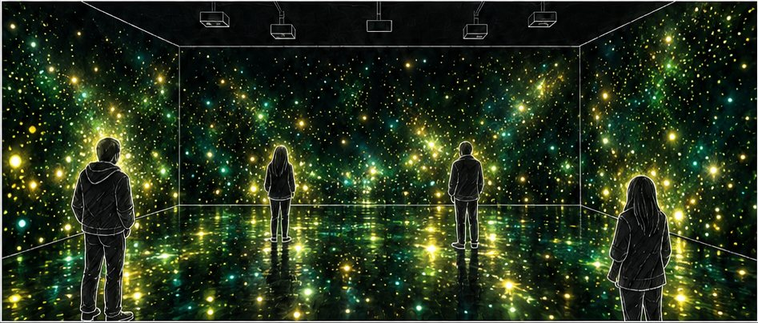
3
반딧불이확정내 주변만 밝아짐 · 벽 앞 손짓
직무수행능력평가 1 · 프로젝트 디자인 & 개발 전략
공간이 바뀌고, 테스트에서 관객의 반응을 보며 인터랙션과 장면을 계속 좁혀 왔습니다.
| 구분 | 처음 | 지금 | 바뀐 이유 |
|---|---|---|---|
| 공간 | 강의실 · 벽 3면 | COSS 호라이즌 스튜디오 · 벽 3 + 바닥 1 | 시설 프로젝터와 공간을 확보. 바닥이 생기며 관객이 서는 자리 자체가 화면이 됨 |
| 감지 | 정면 실루엣 · 손 | 위치 + 제스처 (스켈레톤) | 위치만으로는 바닥에서만 반응해 관객이 알아채지 못함 → 시선이 머무는 벽에도 반응 |
| 반응하는 면 | 바닥만 | 바닥 + 다가간 벽 | 단, 다가가기만으로는 벽이 움직이지 않고 손짓에만 짧게 반응 — 관계의 강도로 제한 |
| 장면 | 7장면 중 4장면 반응 | Unity 메인 2장면 (반딧불이 · 사람) | 개미는 관객이 인터랙션을 잘못 인식해 보류, 나비(물 파동)는 폐기. 반응이 분명한 장면에 집중 |
| 인원 | 정하지 않음 | 감지 6 · 인터랙션 최대 4 · 기준 2명 | 4명이면 누가 무엇을 일으켰는지 보이지 않음 → 연출은 2명 기준 |
| 도구 | TouchDesigner + Unity 병행 | Kinect v2 + Unity 하나로 | 4면을 한 장(3800×2000)으로 출력하기 위해 Unity 로 통일. 예비 감지 시스템은 두지 않음 |
바닥에 선 관객을 감지해 바닥에서 벽 3면으로 빛이 이어지는 구조를 스튜디오에서 처음 확인했습니다.
스토리보드의 7장면은 그대로 흐르고, 그중 관객 반응이 핵심인 반딧불이 · 사람을 실시간 인터랙션으로 만듭니다.
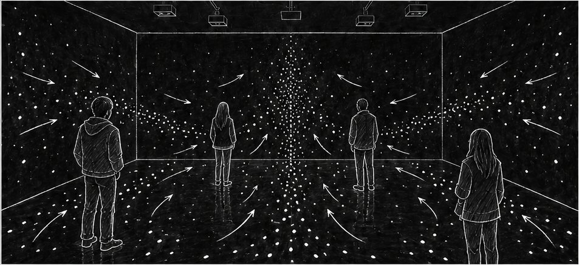
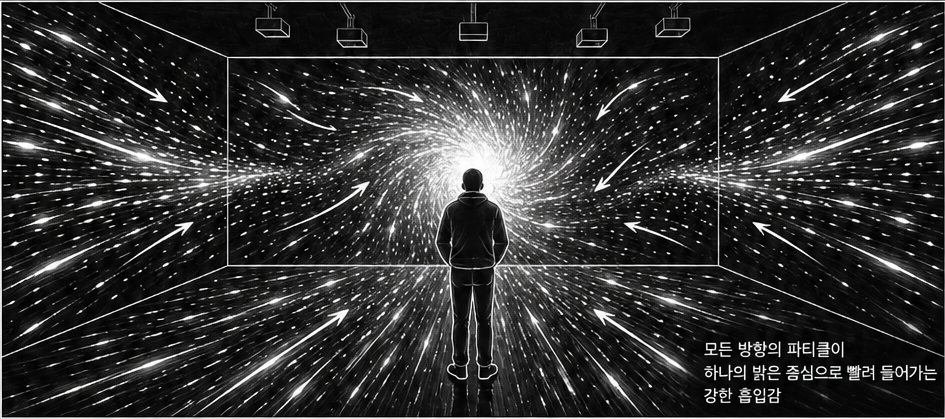

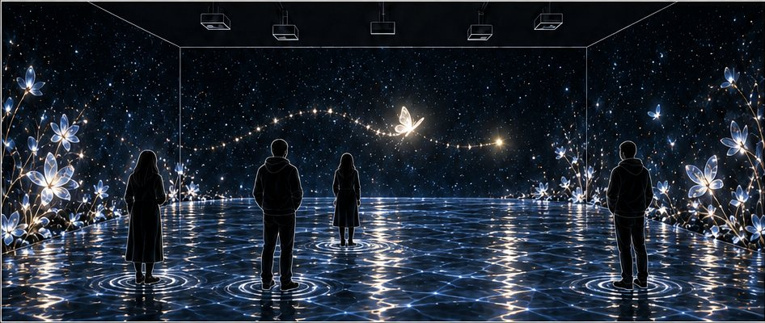
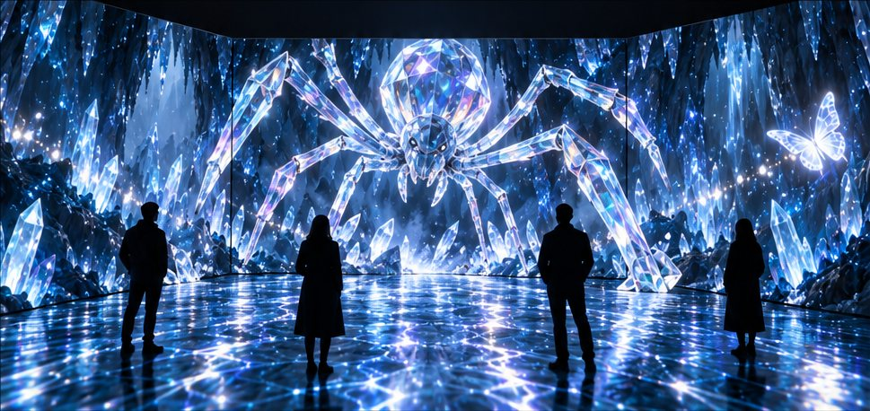
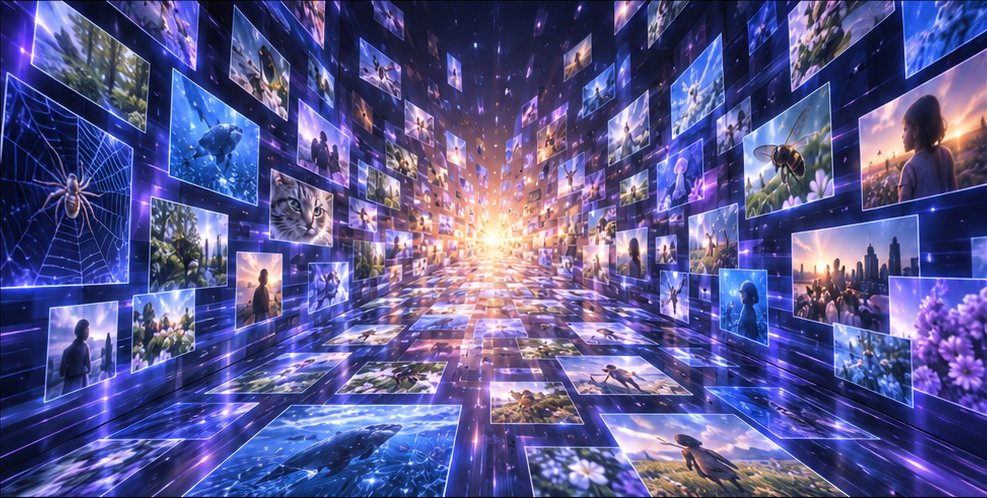
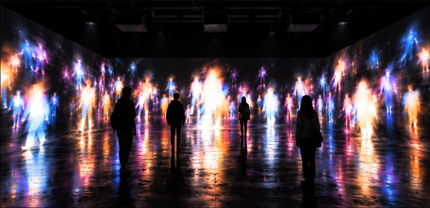
LIMEN 은 라틴어로 '문턱'. 꿈과 자각몽을 메타포로, 관객이 같은 공간 안에서 인식만 바뀌는 경험을 만듭니다. 공간을 나누지 않는 이유도 여기에 있습니다 — 변화의 원인이 "공간이 바뀌어서"가 아니라 "내가 알아차려서"여야 하기 때문입니다.
모든 것이 내 뜻대로 반응하면 관객은 "내가 세계를 조종한다"고 느낍니다. LIMEN 은 반응의 크기와 조건을 일부러 제한해, 내가 세계에 영향을 주고 세계도 나에게 영향을 주는 관계로 읽히게 합니다.
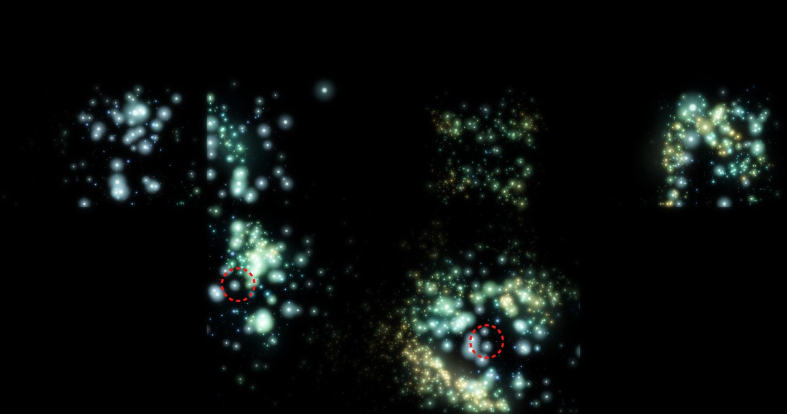
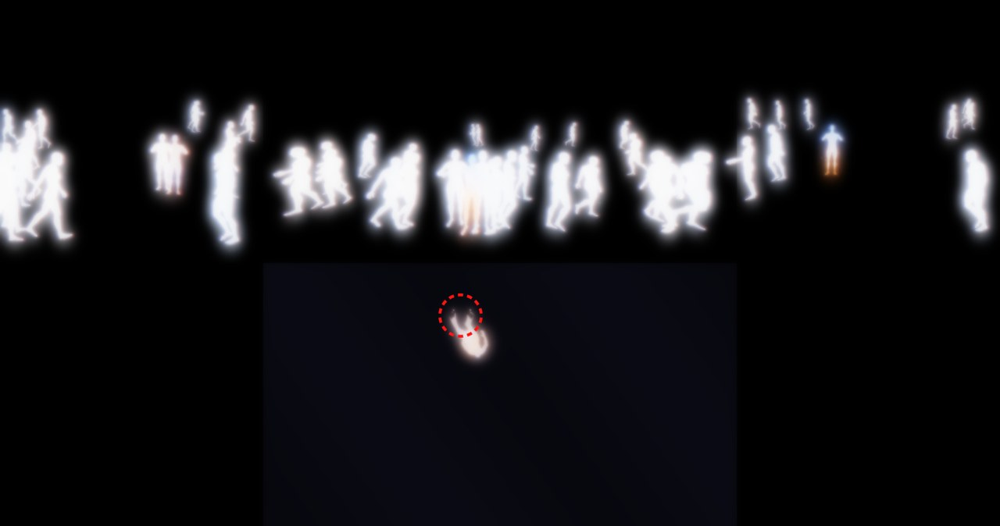
| 관객 행동 | 감지 방법 (Kinect v2 관절) | 반딧불이 | 사람 |
|---|---|---|---|
| 들어와 선다 | 두 발목 관절의 가운데 → 바닥 좌표 | 발밑 둘레의 빛이 깨어남 | 벽 · 바닥 거울에 내 모습이 색으로 나타남 |
| 걷는다 | 좌표 변화 → 걷는 속도 · 방향 | 빛이 나를 따라 옮겨 감 | 군중이 같은 방향으로 흐름 |
| 벽에 다가간다 | 가장 가까운 벽까지의 거리 | 그 벽이 밝아짐 (붙으면 100%, 방 가운데면 50%) | 가까운 벽 쪽으로 군중이 모여듦 |
| 벽 앞에서 손짓 | 몸통 기준 손 · 팔꿈치 상대속도 + 벽 1m 안 | 손 주변 반딧불이가 비켜났다 3초 뒤 복귀 | — |
| 팔을 움직인다 | 어깨 → 팔꿈치 → 손목 방향 | — | 벽 · 바닥 속 내가 같은 팔 동작 (벽 속은 거울처럼 좌우 반전) |

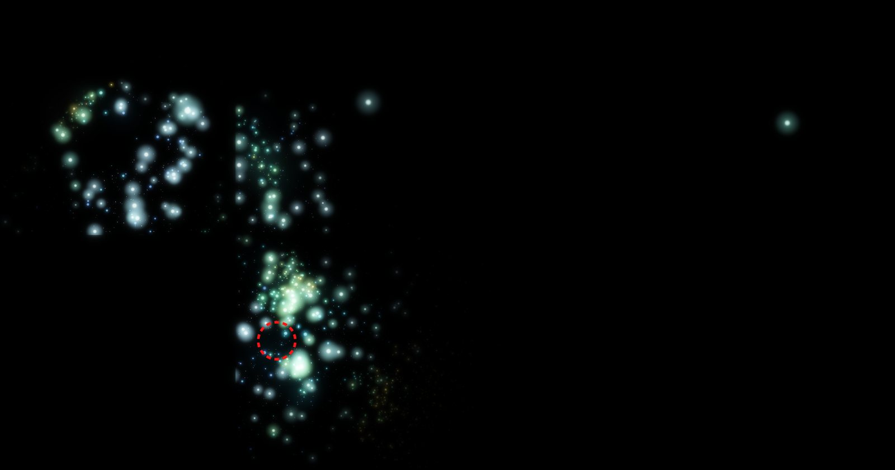
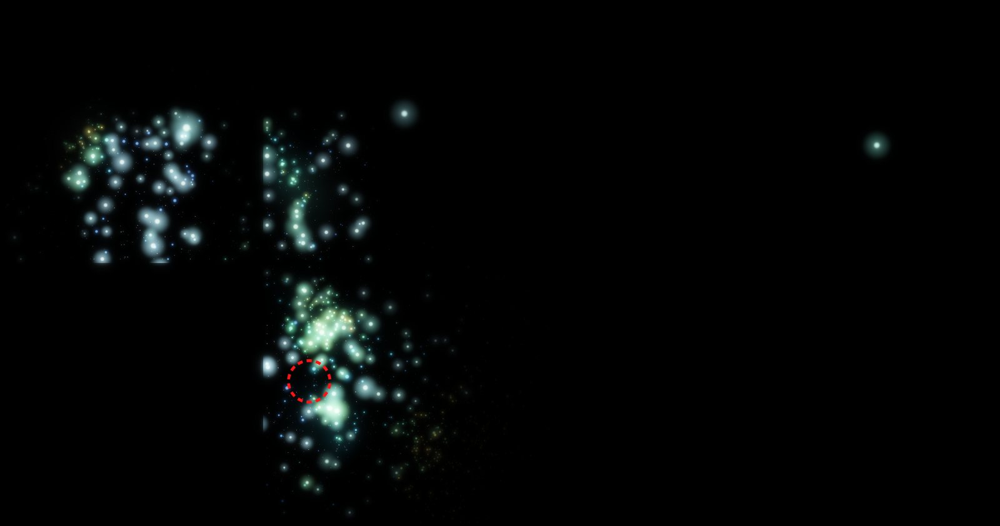
25개 관절을 가진 가상 관객이 정해진 60초 동작을 수행하고, 실제 키넥트와 같은 경로로 장면에 들어갑니다.
같은 동작 대본으로, 군중의 흐름과 거울 속 내가 팔 동작을 따라 하는지 확인했습니다.
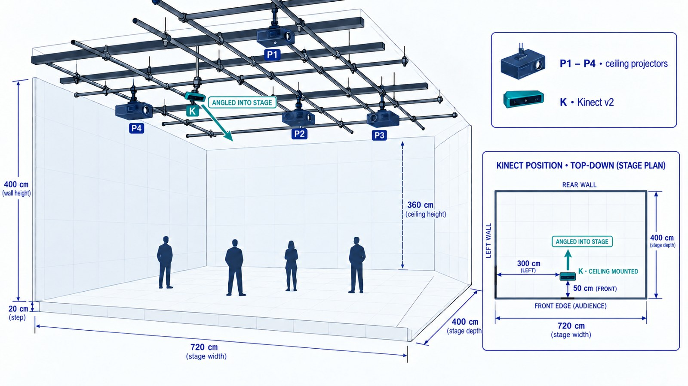
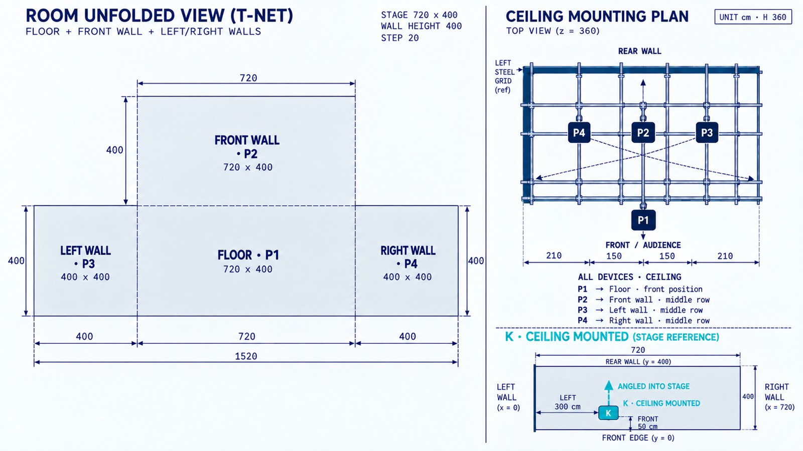
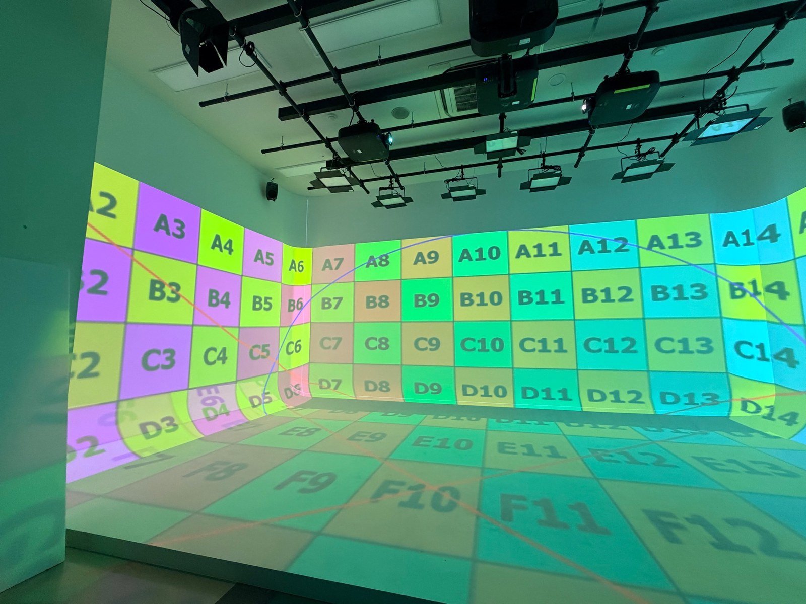

현장 사용 시간이 한정돼 있어, 센서 없이도 같은 조건을 재현하는 도구를 함께 만들었습니다.
관객이 실제로 선 자리와 빛이 나타나는 자리가 어긋나지 않게, 좌표를 단계마다 맞춥니다. 프로젝터는 움직일 수 없으므로 맞춤은 전부 소프트웨어에서 합니다.
현장 테스트에서 겪은 문제를 순서로 정리했습니다. 처음 한 번 맞춘 뒤에는 5분 안에 재정합하는 것이 목표입니다.